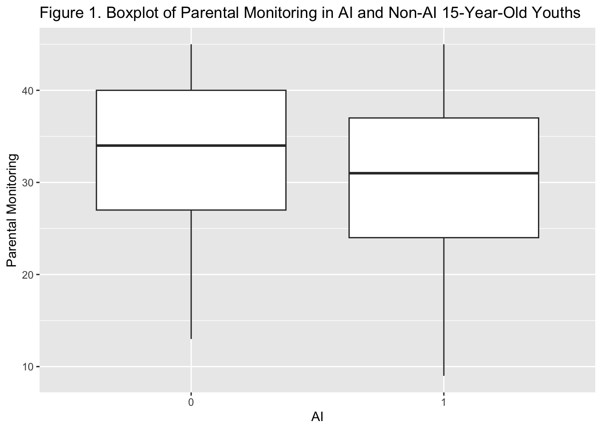
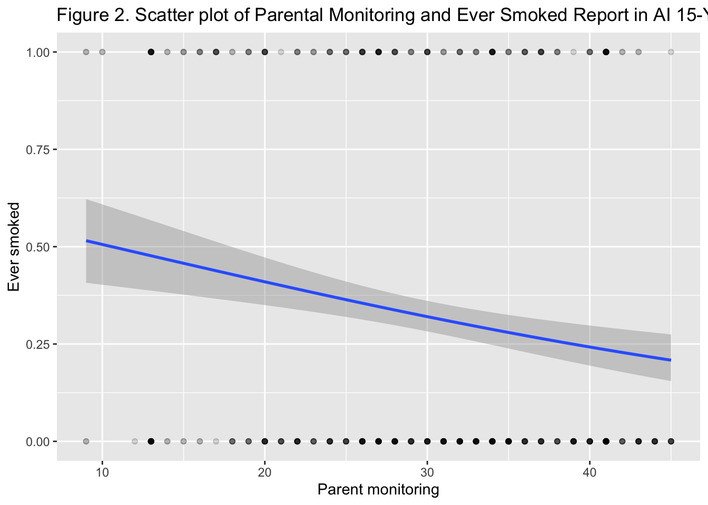

Tobacco Use and Parental Monitoring among American Indian Youth
Abstract
American Indians (AI) and Alaska Natives (AN) report greater cigarette use than all other racial/ethnic groups and subgroups in the U.S. (Martell, Garrett, and Caraballo 2016). Tobacco use is a major cause of cardiovascular disease (Disease Control and Prevention 2022). In fact, cardiovascular disease and lung cancer are leading causes of death among people who identify as American Indian (Disease Control and Prevention 2022). While past research posits that high rates of tobacco use in AI/AN youth may be due to culturally traditional use and tobacco companies targeting marginalized groups (Food and Administration 2023), less is known about how parental monitoring contributes to tobacco use. The purpose of this study was to examine if AI youth have lower reported parental monitoring compared to non-AI youth and the extent to which parental monitoring predicted ever smoking cigarettes. We hypothesized that higher reported parental monitoring was related to lower tobacco usage rates, on average, in a population of AI and AN adolescents. Data came from the publicly available Substance Use Among American Indian Youth dataset (N = 847, 47% female). We found that AI youth had less parental monitoring compared to non-AI peers, and parental monitoring significantly predicted having ever smoked cigarettes. Findings suggest that parental monitoring is a protective factor for AI youth and it may help decrease tobacco usage in this population of youth.
Introduction
People who identify as American Indian (AI) or Alaska Native (AN) report greater cigarette use than all other racial/ethnic groups and subgroups in the U.S. (Martell, Garrett, and Caraballo 2016). In 2022, middle and high-school students who identified as AI/AN were also more likely to report ever having used a tobacco product compared to all other racial/ethnic groups (13.5% of AI/AN compared to 13% who identify as multiracial, 12.4% who identify as white, 11.5% who identify as black, 11.1% who identify as Hispanic/Latinx, and 3.1% who identify as Asian; (Park-Lee et al. 2022)). Nine out of ten U.S. smokers who report smoking at least daily tried their first cigarette before the age of 18 (see note below*). Tobacco use can cause cardiovascular disease and lung cancer which, respectively, are the leading causes of death and cancer deaths among people who identify as AI (Disease Control and Prevention 2022). Identifying risk and protective factors of tobacco use among AI youth is a top priority given the racial disparity in youth smoking rates and the substantial health burden caused by tobacco use in this community.
*This link is in Zotero, but won’t appear here in R Studio for me: https://www.cdc.gov/tobacco/data_statistics/fact_sheets/youth_data/tobacco_use/index.htm
Parental monitoring – parenting behaviors including attention to where children go and activities they engage in (Dishion and McMahon 1998) – may be a protective factor for decreased substance use among AI youth (Boyd-Ball et al. 2014; Haruyama et al. 2023; Schick et al. 2022). Limited research has been conducted that examines this relation with a focus on tobacco use among AI youth. The challenges that AI parents face are unique. Specifically, traditional AI parenting practices were disrupted by colonization that led to children being separated from their families by forcibly attending boarding schools or being placed with White families, which has left a lasting impact on parental self-efficacy among AI parents (Brave Heart 1999; Walters et al. 2011). Several support services and interventions are available that target parental monitoring (e.g., Dishion, Nelson, and Kavanagh 2003), and increasing evidence of parental monitoring and tobacco use among AI youth contributes to the understanding of the potential of these programs in this population.
The Present Study
Our research questions were the following: (1) Do AI students have lower reported parental monitoring compared to non-AI students? (2) Do AI students with higher reported parental monitoring use substances at lower rates?
Although people who identify as AI and AN have similar needs and experiences, the populations are not interchangeable. The focus of this study was exclusively on AI youth.
Methods
Participants
Data came from the Substance Use Among American Indian Youth (2015-2020) data set (Swaim and Stanley 2021). Participants were AI adolescents in grades 7 and above attending school on or near (within 25 miles of) AI reservations or designated tribal lands across the U.S. Students were recruited through letters sent home to parents and through posts on local media sites.
To identify participating schools, the following data sets were used: the NCES Common Core of Data (CCD), the NCES Private School Universe Survey (PPS), and the Bureau of Indian Education (BIE) National Directory. Only schools with at least 20% AI enrollment and total enrollment of at least 20 students were eligible, and eligible schools were randomly selected to participate.
Procedure
Participants completed the anonymous Our Youth, Our Future (OYOF) online survey using Qualtrics software. School staff was present, but remained in an area where student responses were not visible. Staff read survey directions and informed students that they could decline to participate or leave blank any questions they did not wish to answer. These instructions were repeated in the online survey.
Variables of Interest
For our first research question, we used self-reported AI identity of 15-year-old youth (not mutually exclusive with other races) as a predictor of parental monitoring level. For our second research question, we used parental monitoring level as a predictor of having ever smoked cigarettes for 15-year-old participants.
We used a subset of the data to only analyze data of 15-year-old participants because we suspected that parental monitoring was a stronger influence on child health outcomes when the youth still lived at home and did not have a driver’s license. This age is within typical age range to initiate tobacco use in this population of AI youth.
Parental monitoring is a constructed variable which comprises nine items from the OYOF regarding parental knowledge of their adolescent’s activities and engagement in monitoring behaviors (e.g., My parent ask about happenings at school; I need permission to be out late on weekends). One item was reverse coded (i.e., I keep secrets from my parents about what I do in my free time). Parental monitoring level is the sum score of the nine items, which ranged from 9-45. In other words, higher sum scores means more parental monitoring for youths.
The ever smoked variable was dichotomized for analysis. Participants answered one question about having ever smoked cigarettes. We chose to dichotomize this variable since participants in this subset were on the low end of the typical age range to initiate tobacco use.
Analytic Approach
To answer the first research question, we ran a two-sample t-test in parental monitoring between AI and non-AI 15-year-old youths. To answer the second research question, we used logistic regression to examine the relation between parental monitoring and having ever smoked cigarettes. All analyses were completed using R Version 2023.03.1+446 (R Core Team 2023). The packages used for analysis were Tidyverse (Wickham et al. 2019), here (Müller 2020), rio (Chan et al. 2018), ggplot2 (Wickham 2016), missMethods(missMethods?), modelsummary (Arel-Bundock 2022), janitor (Firke 2023), gtsummary (Sjoberg et al. 2021), forcats (Wickham 2023), and sandwich (Zeileis, Köll, and Graham 2020).
Results
Data Cleaning
Descriptive Statistics
# A tibble: 847 × 6
# Groups: startdate, enddate [847]
startdate enddate sex ever_smoked AI parent_mon_sum
<fct> <fct> <fct> <dbl> <dbl> <dbl>
1 08-OCT-2018 10:23:59 08-OCT-2018 10:5… Male 0 0 36
2 09-OCT-2018 09:31:10 09-OCT-2018 09:5… Male 1 1 22
3 09-OCT-2018 11:13:55 09-OCT-2018 11:3… Male 0 1 43
4 09-OCT-2018 13:52:42 09-OCT-2018 14:1… Male 1 1 24
5 09-OCT-2018 13:53:38 09-OCT-2018 14:2… Male 1 1 30
6 09-OCT-2018 13:57:55 09-OCT-2018 14:3… Male 1 1 19
7 09-OCT-2018 13:54:19 09-OCT-2018 14:2… Fema… 0 1 33
8 17-OCT-2018 08:08:54 17-OCT-2018 08:2… Male 0 0 38
9 17-OCT-2018 08:08:51 17-OCT-2018 08:2… Male 0 0 34
10 17-OCT-2018 08:09:11 17-OCT-2018 08:2… Fema… 0 1 34
# ℹ 837 more rows| Characteristic | N = 8471 |
|---|---|
| Sex | |
| 1 | 53% |
| 2 | 47% |
| Ever Smoked | 27% |
| AI | 66% |
| Parental Monitoring | 32 (25, 39) |
| 1 %; Median (IQR) | |
Of the 15 year olds included in this sample (N= 847), 27% reported ever having smoked a cigarette. The majority of the students in this sample self-identified as AI (66%). Most students self reported relatively high levels of parental monitoring (M= 30.9563164 on the parental monitoring scale, which ranged in possible values from 9-45, with higher scores indicating more monitoring. 53% of our sample identified as male and 47% identified as female, indicating a relatively equal breakdown by sex.
AI Students and Parental Monitoring
List of 10
$ statistic : Named num 3.81
..- attr(*, "names")= chr "t"
$ parameter : Named num 583
..- attr(*, "names")= chr "df"
$ p.value : num 0.000155
$ conf.int : num [1:2] 1.2 3.77
..- attr(*, "conf.level")= num 0.95
$ estimate : Named num [1:2] 32.6 30.1
..- attr(*, "names")= chr [1:2] "mean of x" "mean of y"
$ null.value : Named num 0
..- attr(*, "names")= chr "difference in means"
$ stderr : num 0.653
$ alternative: chr "two.sided"
$ method : chr "Welch Two Sample t-test"
$ data.name : chr "desg_w$AI_0 and desg_w$AI_1"
- attr(*, "class")= chr "htest"
Independent two-sample t-test in parental monitoring between AI and non-AI 15-year-old youths showed that AI youths reported significantly lower parental monitoring than non-AI youths (M1= 30.1109123, M2= 32.5972222, 3.8082118, df= 583.0281809, p= 1.5480958^{-4}).
Parental Monitoring and Tobacco Use in AI Youths
| (1) | |
|---|---|
| (Intercept) | 0.469*** |
| [0.391, 0.562] | |
| scale(parent_mon_sum) | 0.704*** |
| [0.589, 0.843] | |
| Num.Obs. | 559 |
| AIC | 693.0 |
| BIC | 701.7 |
| Std.Errors | HC3 |
| + p < 0.1, * p < 0.05, ** p < 0.01, *** p < 0.001 | |

A logistic regression model revealed that for each point increase in parental monitoring, AI youth in this sample were, on average, about 30% less likely to have initiated smoking tobacco by age 15 (B= 0.70, 95%CI[0.59, 0.842], p<.001).
Discussion
We found that AI youth tended to self-report less parental monitoring than their non-AI peers and replicated the previous finding that increased parental monitoring is associated with lower odds of initiating tobacco use in our AI youth sample. There are a number of reasons why AI youth may report less parental monitoring than their non-AI peers; the historical displacement and discrimination towards people who identify as AI may increase the stressors experienced by AI parents, limiting the amount of time that they have to dedicate to monitoring their child’s activities. However, we did find that youth-reported parental monitoring was associated with decreased odds of tobacco use initiation in this sample, indicating that parental monitoring may serve as a protective factor against tobacco use among AI youth. Because rates of tobacco use are high among this population, identifying and promoting protective factors is key to mitigating the tobacco-related morbidity and mortality that has disproportionately affected this population.
The current analysis has the advantage of using a national dataset with a relatively large sample size. We looked only at 15 year olds in this sample to eliminate the mediating effect of age on the relationship between parental monitoring and tobacco use. This analysis does not generalize to the entirety of the AI population in the US, however, because only AI youth who lived within 25 miles of a reservation were recruited to participate in this study. Our measure of parental monitoring was reported by youth and may not reflect the reality of the youth’s parent’s monitoring, especially if the youth is not fully aware of the ways that their parent monitors their behavior. Because parental monitoring was summed, this analysis is not sensitive to the different impact that certain types of monitoring may have relative to others (i.e. all questions pertaining to monitoring were given equal weight and no analyses were conducted to assess which types of monitoring most accurately predict tobacco initiation). Finally, this analysis did not measure levels of tobacco use because smoking was simply coded as yes or no, so we cannot make claims about the effect of parental monitoring on the frequency or quantity of tobacco use in AI youth.